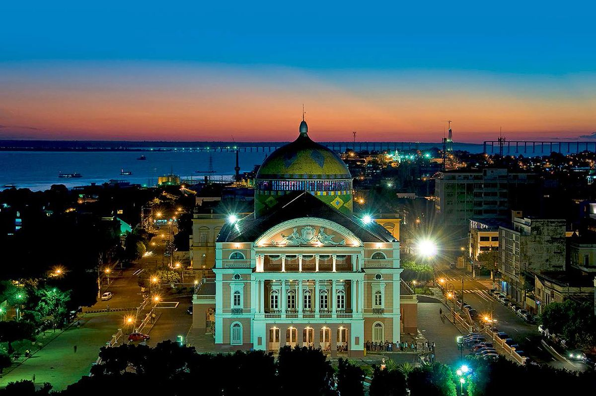
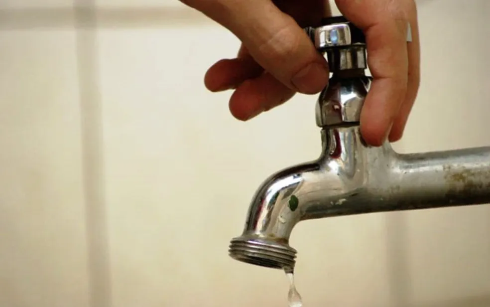
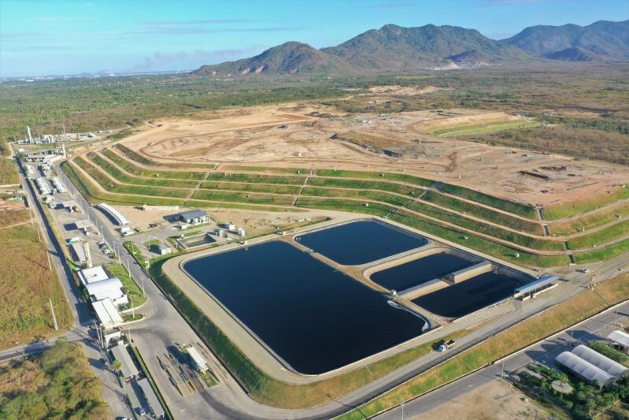
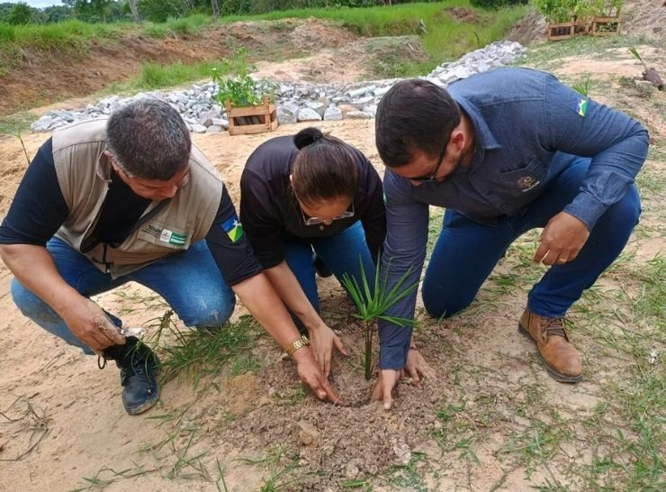

Notícias Recentes
O rio invisível do Amazonas: curso subterrâneo intriga cientistas a 4 mil metros de profundidade
2 horas atrás • Amazonas
Por Categoria

CIDADES
CULTURA

 ECONOMIA
ECONOMIA
POLÍTICA
Notícias Recentes
-

Mais de 300 áreas de Manaus ficam sem água por manutenção da rede
Serviço de manutenção na rede de fornecimento de água afeta centenas de famílias na capital amazonense.
-
Com 23 projetos habilitados, Acre é um dos estados com maior participação no programa Rouanet da Juventude
Estado investe e colhe resultados para jovens das periferias com incentivo à cultura e educação.
-
Tocantins é destaque mundial no combate à febre aftosa
Estado se destaca na erradicação da doença e conquista mercados internacionais.

Cidades
Lugar Escondido No Tocantins Tem Água Que Desafia A Gravidade
Economia e Política
27/05/25
Autoridades do Acre repudiam ataques contra ministra Marina Silva em comissão no Senado
Em nota, autoridades destacam que Marina Silva foi interrompida, desrespeitada e alvo de insinuações ofensivas.

29/05/25
Manaus rumo aos combustíveis sustentáveis: Novo aterro impulsiona potencial da Amazônia
Novo aterro em Manaus busca inserir a Amazônia na rota dos combustíveis sustentáveis.

27/05/25
Governo do RO atualiza plano de carreira da Sedam para valorizar servidores
A lei moderniza o Plano de Carreira, Cargos e Remuneração (PCCR) dos servidores da Sedam, valorizando o fortalecimento e atuação na área ambiental.
Carregando...
...
...
Previsão do Tempo
Sexta-feira | 30 Mar 2025Gráfico do tempo em horas
Praia da Ponta Negra